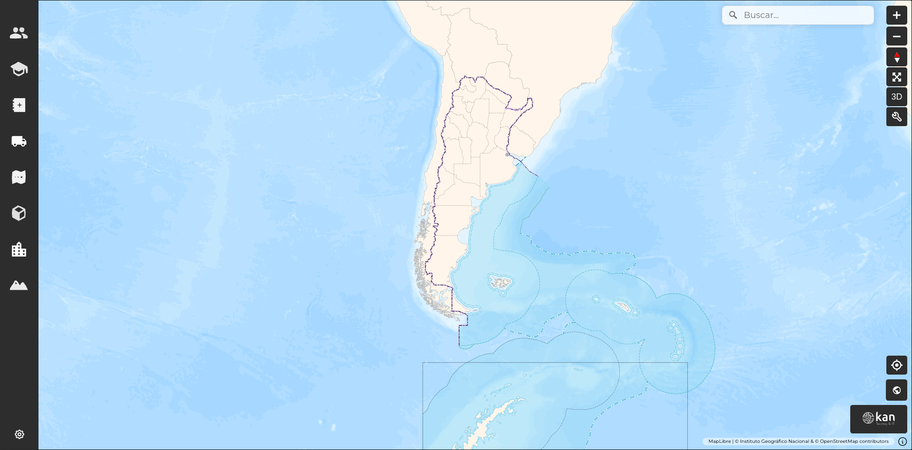

Bienvenido a la documentación de GeoExpress Visor¶
Introducción¶
En este documento se describen las distintas funcionalidades y capacidades del visor de Geoexpress https://geoexpress.kan.com.ar, en su versión 2.2.0. El objetivo es que el usuario final pueda navegar cómodamente y aprovechar todas las herramientas que ofrece. Para ello se realizará un repaso detallado de todas las secciones y botones del visor, haciendo énfasis en la perspectiva del usuario dentro de la interfaz.
